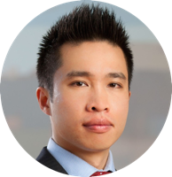

the team
Will Jack, CEO
Will studied physics and computer science at MIT. Before developing an interest in building a better healthcare system, Will developed communications systems for SpaceX’s internet satellite project, and at age 16 built a particle collider in his basement. Will spends his free time angel investing in early stage technology companies and as a venture partner at Alsop Louie Partners.

Nikhil Buduma, CSO
Before Remedy, Nikhil worked on machine learning systems at MIT CSAIL and authored the O’Reilly Fundamentals of Deep Learning book. He devloped a keen interest building affordable healthcare after running a university drug discovery lab at the age of 15. In his free time, Nikhil invests in early stage companies and sits on the board of his mental health and wellness non-profit, Lean On Me.

Mike Ng, COO
Mike’s prior experience includes product management at Sumo Logic, private equity investing at Calera Capital, investment banking at Morgan Stanley, and patent strategy at Ambri Limited (health diagnostics). He also developed a widely cited survival analysis model for forecasting hedge fund failure. Mike studied entrepreneurship & innovation at MIT Sloan and finance & accounting at the University of Sydney.